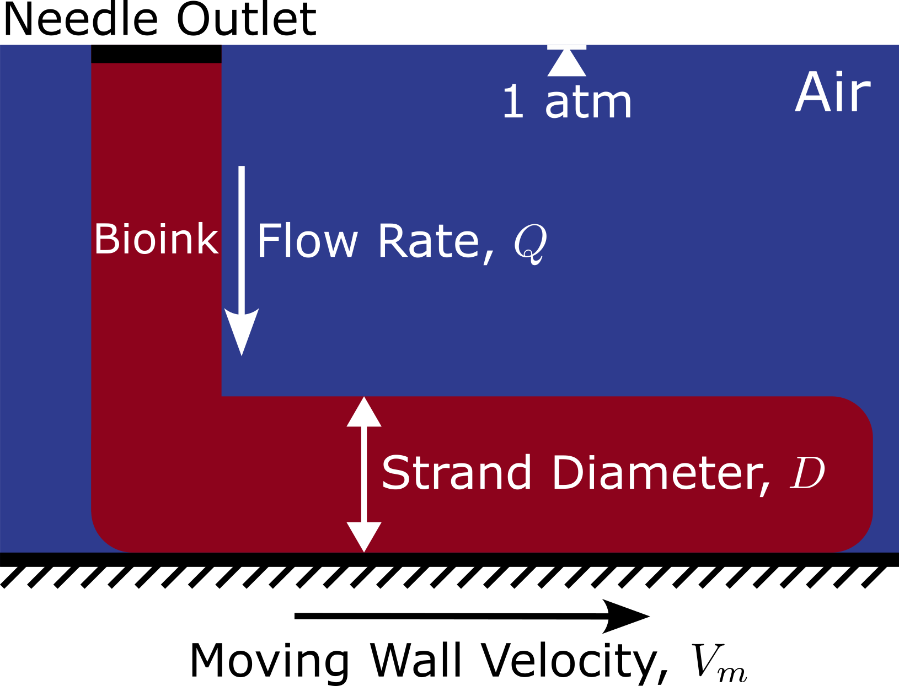

私について
大阪大学基礎工学研究科の2年生です。カリフォルニア大学サンタバーバラ校を卒業した後、日本の大学院で夢を追求することを決めました。
現在、OpenFOAMやPythonを使って3Dバイオプリンティングに関する流体せん断応力のシミュレーションを行っています。また、日本語と敬語も勉強しています。
私の研究興味は相変化熱伝達、光応答性界面活性剤、計算流体力学、そして3Dバイオプリンティングです。また、現在TypeScript、HTML/CSS、そしてPythonを使った機械学習を学んで練習しています。
よろしくお願いします。
プロジェクト例
NHK NEWS WEB EASY スクレイパー
このツールは、NHK NEWS WEB EASYのウェブサイトから簡易化された日本語のニュース記事を取得し表示するのに役立ちます。ニュースの内容だけでなく、重要な語彙とその発音を抽出し、可能な場合には辞書の定義も提供します。
始めるには、『作成』ボタンをクリックするだけです。また、『コピー』ボタンを使って内容をクリップボードにコピーすることもできます。
なお、ニュースの更新は平日に2回、おおよそ午後12時と午後5時に行われます。これらの更新期間中は、ニュース取得機能が正しく動作しない場合があります。また、『作成』機能は、NHK NEWS WEB EASYウェブサイトの最新のヘッドライン4つからランダムに記事を抽出することにご注意ください。
また、このツールのPythonで開発された使いやすいグラフィカルインターフェース版もご覧いただけます。このGitHubリポジトリでチェックしてみてください。
すべてのニュースコンテンツは、NHK（日本放送協会）によって著作権が保護されています。
「NEWS WEB EASY」では、三省堂の『例解小学国語辞典第5版』を使っています。
辞書の著作権は、辞書を作った株式会社三省堂にあります。
連絡先
以下のPythonスクリプトを実行することで、ASCIIから文字列への変換を利用して私に連絡を取ることができます：
"".join(chr(i) for i in (107, 111, 114, 105, 110, 46, 106, 97, 112, 97, 110, 64, 103, 109, 97, 105, 108, 46, 99, 111, 109))または、ブラウザのコンソールで直接実行できるJavaScriptバージョン:
String.fromCharCode(107, 111, 114, 105, 110, 46, 106, 97, 112, 97, 110, 64, 103, 109, 97, 105, 108, 46, 99, 111, 109);研究
3D押し出しバイオプリンティングは、組織工学の分野で急速に発展しており、カスタマイズされた生物工学的構造物の製造を可能にしています。本研究では、数値解析と機械学習を活用し、ニードル内部の流体剪断応力、印刷効率、印刷適性、および細胞生存率について考察し、これらの要素を最適化することを試みています。
